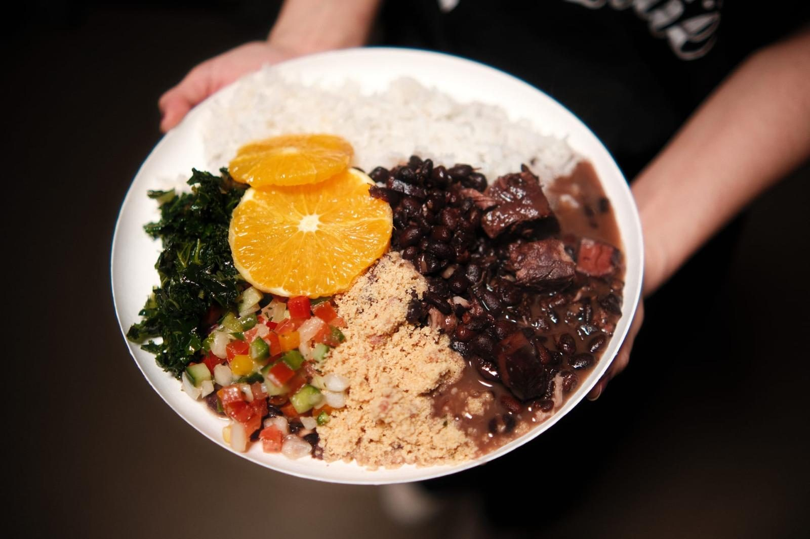
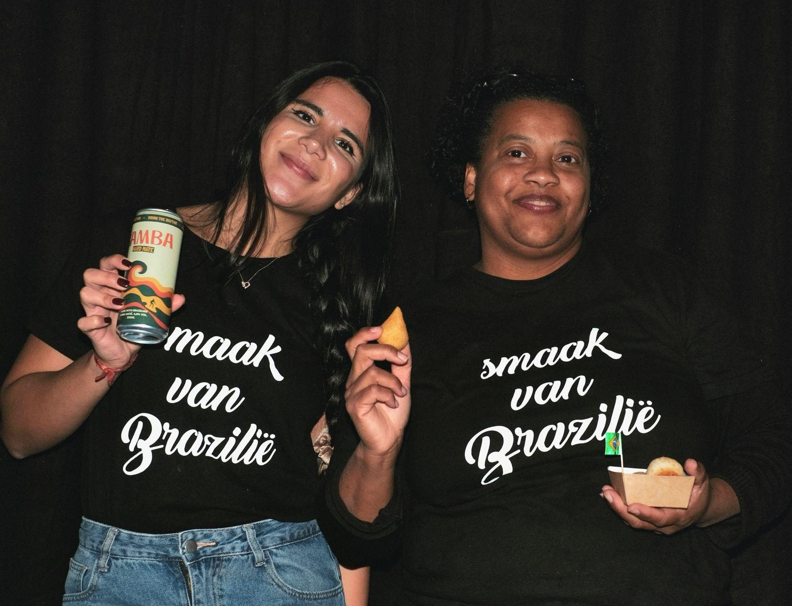
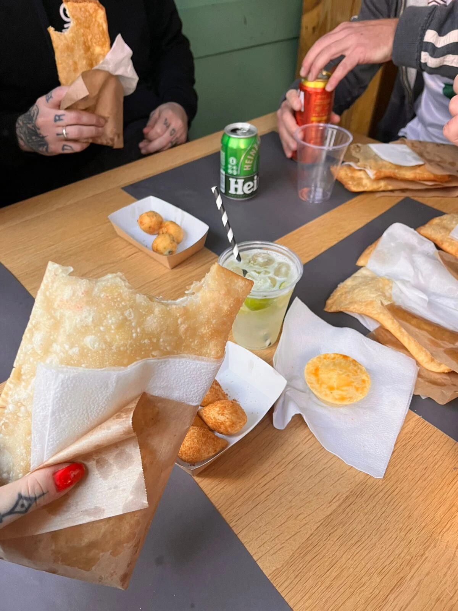
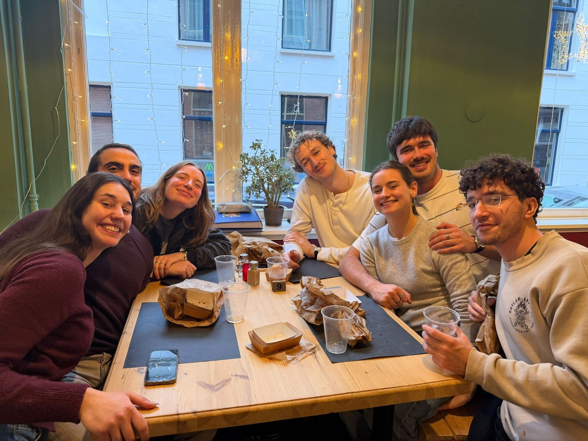
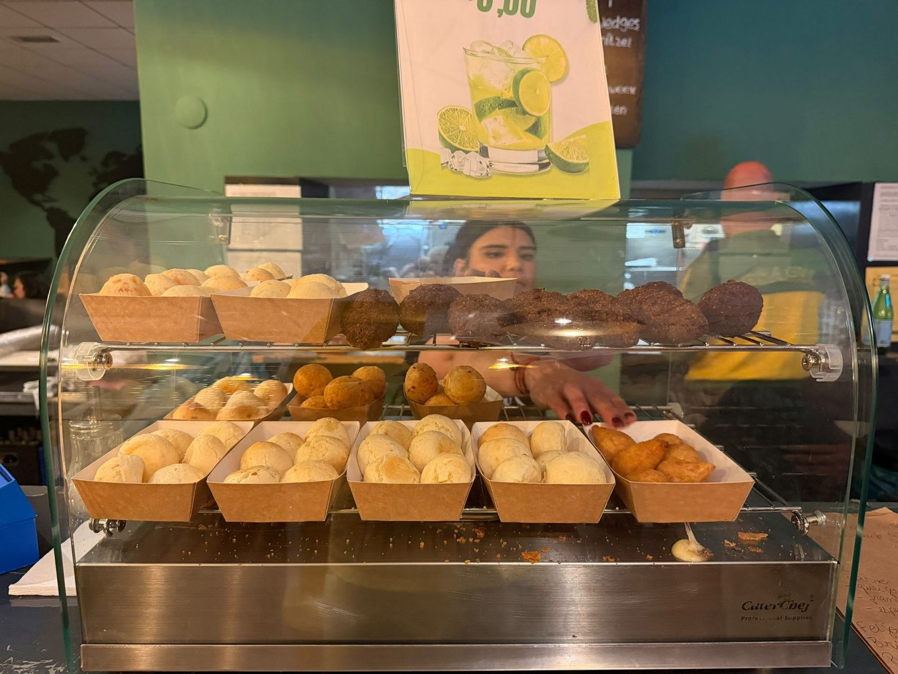
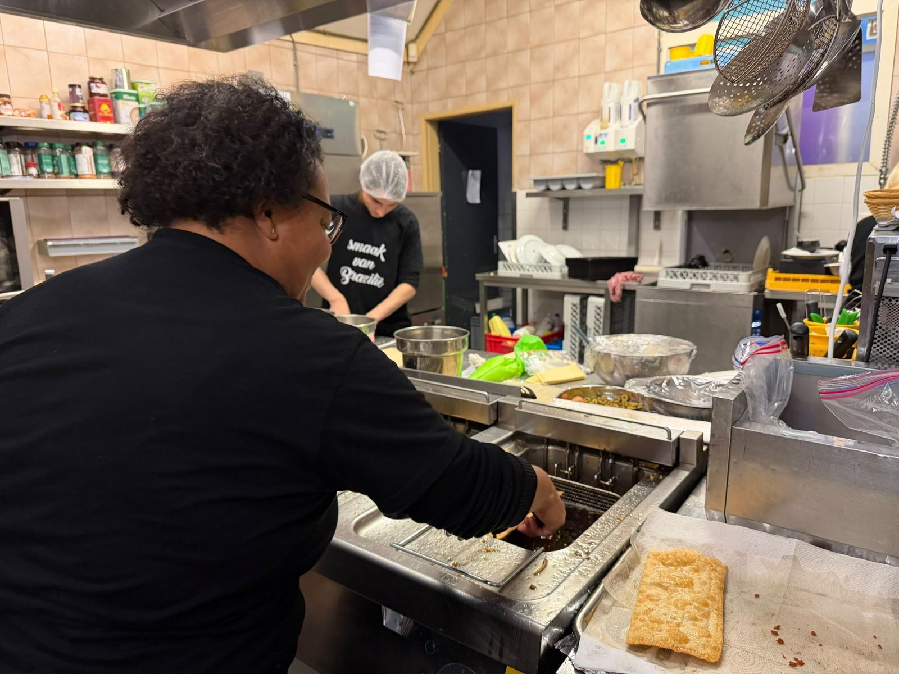

Bem-vindo
De smaak van thuis, gemaakt in Groningen
Feijoada zoals op zondag bij oma. Aina kookt wat ze mist van Brazilië, en deelt het met jou.

feito com amorSmaak van Brazilië begon in Aina's eigen keuken, met recepten van thuis en vrienden die steeds vaker vroegen of ze nog een keer die coxinha's wilde maken. Inmiddels kookt ze voor feesten, bedrijven en een maandelijkse restaurantdag in Groningen. Wat niet verandert: alles komt uit haar eigen keuken, met dezelfde aandacht als een maaltijd voor familie.
"In Brazilië kom je nooit op bezoek zonder dat er iets op tafel komt."

Eén dag per maand verandert een zaal in Groningen in een Braziliaans eethuis, met feijoada, pastéis, pão de queijo en meer.
Aina werkt met verse ingrediënten en een kleine keuken, dus het aanbod wisselt. Dit kun je deze maand bestellen.
Hapjesmix voor een borrel, een feijoada-tafel voor een verjaardag, of een zoete tafel met brigadeiros en taart. Aina stelt samen met jou een menu samen dat past bij de gelegenheid, en brengt het naar jou toe.
Bekijk het assortiment of de taarten. Alles met "Nu bestelbaar" kun je aanvragen. Twijfel je? Stuur Aina een berichtje.
Via WhatsApp, e-mail of het formulier. Vertel wat, hoeveel en wanneer. Je krijgt snel een bevestiging en de prijs.
Haal op in Groningen, of laat bonbons en diepvries-hapjes bezorgen met PostNL door heel Nederland.




